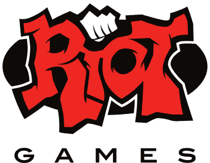
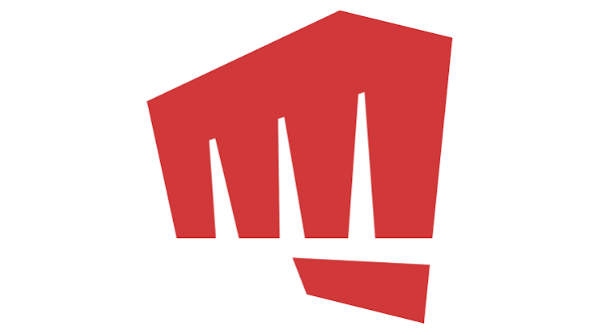
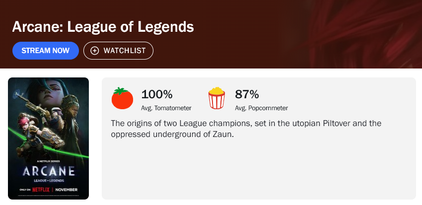
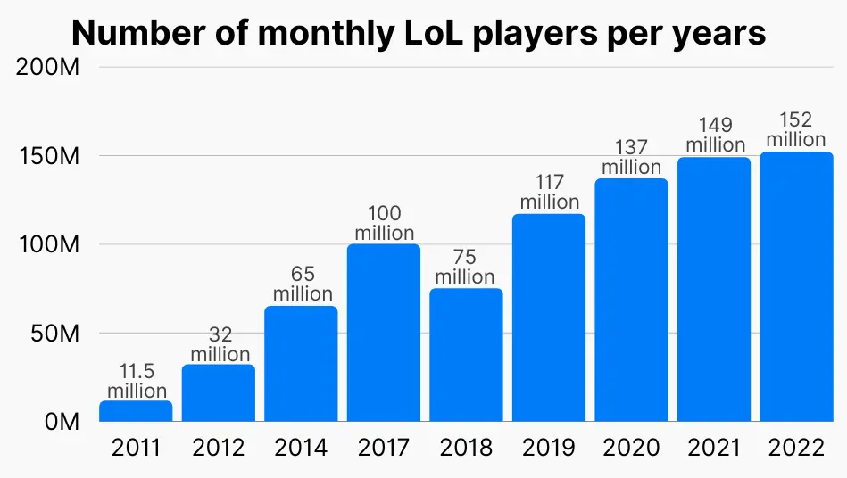
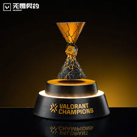
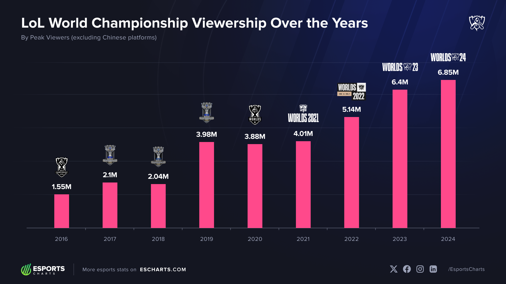
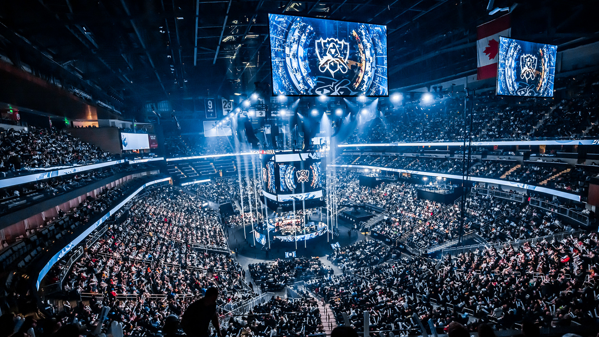

Rito games
Quem é a riot Games?
A Riot Games nasceu em 2006, fundada por dois amigos de
faculdade, Marc Merrill e Brandon Beck, que eram apaixonados por jogos e achavam que as empresas da
época abandonavam os games logo depois do lançamento. Com a ideia de criar um jogo gratuito que
recebesse atualizações constantes e ouvisse a comunidade, eles lançaram o League of Legends (famoso
LoL) em 2009. O começo foi humilde e cheio de perrengues técnicos, mas o estilo de jogo conquistou a
galera rápido, transformando um pequeno estúdio em Los Angeles em um fenômeno mundial e ajudando a
transformar os eSports no espetáculo gigante que conhecemos hoje.
Com o sucesso estrondoso do LoL, a Riot deixou de ser a "empresa de um jogo só" e expandiu bastante
o seu universo. Nos últimos anos, eles lançaram novos títulos de peso, como o tiro em primeira
pessoa Valorant e o jogo de cartas Legends of Runeterra, além de dominarem as telas com a série
animada Arcane na Netflix, que foi um sucesso absoluto de crítica e público. Hoje, comprada pelo
conglomerado chinês Tencent, a Riot continua sendo uma das maiores gigantes do entretenimento
digital, focada em criar experiências completas que vão muito além dos videogames.
Curiosidades

A antiga foto da Riot
Games
Que evoluiu com o tempo, para um design mais moderno.

Arcane, a séria animada patrocinada pela empresa Riot Games que se passa no universo no jogo "League of Legends" mostrando a história que se passou no jogo explorando diversos temas como a desigualdade social.
Informações

Classificação de acordo com o site Rotten Tomatoes para a séria animada Arcane.

Gráfico representado a quantidade mensal de jogadores entre todos os títulos da empresa Riot Games.
troféus
Esse é o troféu do campeonato "Worlds" do jogo League of Legends feita pela empresa Tiffany & Co feita de prata e pesando quase 20 quilos

O troféu do Champions é diferente do seu comparsa Worlds, ele representa a história do jogo com duas forças que collidem isso banhado em ouro 24 Kilates e resina.
Sobre campeonatos
Os maiores espetáculos da Riot Games acontecem no Worlds (o Campeonato Mundial de League of Legends) e no Champions (a etapa final do circuito mundial de Valorant). O Worlds é o torneio mais tradicional e gigante da casa, reunindo os melhores times do planeta para disputar a cobiçada Taça do Invocador em arenas lotadas com produções dignas de Super Bowl. Já o Champions traz essa mesma energia de megaprojeto para o universo dos FPS, coroando no fim de cada temporada o verdadeiro campeão mundial de Valorant. Ambos os eventos são famosos por parar a comunidade gamer, arrastar milhões de espectadores nas lives e entregar aberturas lendárias com shows ao vivo e bandas virtuais.
Informações

De acordo com o site E charts o gráfico mostra a crescente quantidade de espectadores para o campeonato "Worlds" do jogo League of Legends
